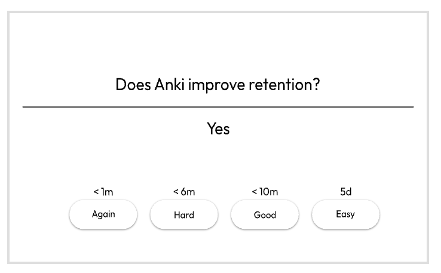

Ankiは無料で利用できる暗記学習ソフトです。 フラッシュカード形式で学習でき、英単語や資格試験の勉強、学校の試験対策などに活用されています。 忘れそうなタイミングで問題を出題する「間隔反復学習」に対応しており、効率的に記憶を定着させることができます。

公式サイトからダウンロードできます。
★★★★★
暗記学習を効率化したい人におすすめのソフトです。 英語学習との相性が特によく、単語やフレーズを長期間覚えておきたい人に向いています。 資格試験や受験勉強にも活用できる定番アプリです。
更新日：2026-06-24